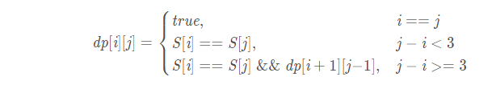

Dynamic Programming-5 Palindromic Subsequence
1. longest Palindromic Subsequence
求最长回文子序列(不连续)的长度
input: "bbbab"
output: 4
explanation: "bbbb"
input: "cbbd"
output: 2
explanation: "bb"
Brute-force
int longestPalindromicSubsequenceRecursive(const string &s, int startIndex, int endIndex) {
if (startIndex > endIndex) {
return 0;
}
//只有一个字符
if (startIndex == endIndex) {
return 1;
}
if (s[startIndex] == s[endIndex]) {
return 2 + longestPalindromicSubsequenceRecursive(s, startIndex + 1, endIndex - 1);
}
//从头或尾跳过一个字符
int c1 = longestPalindromicSubsequenceRecursive(s, startIndex + 1, endIndex);
int c2 = longestPalindromicSubsequenceRecursive(s, startIndex, endIndex - 1);
return max(c1, c2);
}
int LPS(string s) {
return longestPalindromicSubsequenceRecursive(s, 0, s.size() - 1);
}
Time Complexity : O(2^N )
Space Complexity : O(N)
Top-down
int LPSRecursive2(const string &s, int startIndex, int endIndex, vector<vector<int>> dp) {
if (startIndex > endIndex) {
return 0;
}
//只有一个字符
if (startIndex == endIndex) {
return 1;
}
if (dp[startIndex][endIndex] == -1) {
if (s[startIndex] == s[endIndex]) {
dp[startIndex][endIndex] = 2 + LPSRecursive2(s, startIndex + 1, endIndex - 1, dp);
} else {
//从头或尾跳过一个字符
int c1 = LPSRecursive2(s, startIndex + 1, endIndex, dp);
int c2 = LPSRecursive2(s, startIndex, endIndex - 1, dp);
dp[startIndex][endIndex] = max(c1, c2);
}
}
return dp[startIndex][endIndex];
}
int LPS2(string s) {
vector<vector<int>> dp(s.length(), vector<int>(s.length(), -1));
return LPSRecursive2(s, 0, s.size() - 1, dp);
}
Time Complexity : O(N ^ 2)
Space Complexity : O(N ^ 2)
bottom-up
int LPS3(string s) {
vector<vector<int>> dp(s.length(), vector<int>(s.length()));
for (int i = 0; i < s.length(); i++) {
dp[i][i] = 1;
}
//dp[i][j]表示[i,j]区间内的字符串的最长回文子序列,上三角有效
//从下往上，从做往右处理。
for (int startIndex = s.length() - 1; startIndex >= 0; startIndex--) {
for (int endIndex = startIndex + 1; endIndex < s.length(); endIndex++) {
if (s[startIndex] == s[endIndex]) {
dp[startIndex][endIndex] = 2 + dp[startIndex + 1][endIndex - 1];
} else {
dp[startIndex][endIndex] = max(dp[startIndex + 1][endIndex], dp[startIndex][endIndex - 1]);
}
}
}
return dp[0][s.length() - 1];
}
Time Complexity : O(N ^ 2)
Space Complexity : O(N ^ 2)
bottom-up 优化
int lps(string s)
{
int n = s.length();
// dp[i] is going to store length of longest
// palindromic subsequence of substring s[0..i]
int dp[n];
// Pick starting point
for (int i = n - 1; i >= 0; i--) {
int back_up = 0;
// Pick ending points and see if s[i]
// increases length of longest common
// subsequence ending with s[j].
for (int j = i; j < n; j++) {
// similar to 2D array L[i][j] == 1
// i.e., handling substrings of length
// one.
if (j == i)
dp[j] = 1;
// Similar to 2D array L[i][j] = L[i+1][j-1]+2
// i.e., handling case when corner characters
// are same.
else if (s[i] == s[j]){
// value a[j] is depend upon previous
// unupdated value of a[j-1] but in
// previous loop value of a[j-1] is
// changed. To store the unupdated
// value of a[j-1] back_up variable
// is used.
int temp = dp[j];
dp[j] = back_up + 2;
back_up = temp;
}else{
// similar to 2D array L[i][j] = max(L[i][j-1],
// a[i+1][j])
back_up = dp[j];
dp[j] = max(dp[j - 1], dp[j]);
}
}
}
return dp[n - 1];
}
Time Complexity : O(N ^ 2)
Space Complexity : O(N)
2. longest Palindromic Substring
求最长回文串
input: "abdbca"
output: bdb
input: "abbc"
output: bb
input: "abc"
output: a
Brute-force
string LPS(string s) {
int len = s.length();
int maxLen = 1;//任意字符都是回文
int startIndex = 0;
for (int i = 0; i < len; i++) {
for (int j = i + 1; j < len; j++) {
int low = i;
int high = j;
while (low < high && s[low] == s[high]) {
low++;
high--;
}
//"abbc"模式，跳出循环low>high
//"abbtbbc"模式，跳出循环low=high
//j - i + 1 > maxLen,判断长度是否大于1
if (low >= high && j - i + 1 > maxLen) {
maxLen = j - i + 1;
startIndex = i;
}
}
}
return s.substr(startIndex, maxLen);
}
Time Complexity : O(N^3 )
Space Complexity : O(1)
Bottom-up

string LPS2(string s) {
int len = s.length();
int maxLen = 1;
int startIndex = 0;
//dp[i][j]代表[i,j]位置的字符串是否回文
//当 i == j，dp[i][j] 是回文子串（单字符都是回文子串）；
//当 j - i < 3，只要 S[i] == S[j]，则 dp[i][j] 是回文子串（如"aa"，“aba”），否则不是；
//当 j - i >= 3，如果 S[i] == S[j] && dp[i+1][j-1] ，则 dp[i][j] 是回文子串，否则不是 。
vector<vector<bool>> dp(len, vector<bool>(len, false));
//for循环顺序变化，左侧列->右侧列，每列从上到下
//dp[i + 1][j - 1]在dp[i][j]的前一列，下一行，已经生成
for (int j = 0; j < len; j++) {
for (int i = 0; i <= j; i++) {
//小于3也行
if (j - i < 2) {
dp[i][j] = (s[i] == s[j]);
} else {
dp[i][j] = (s[i] == s[j] && dp[i + 1][j - 1]);
}
if (dp[i][j] && j - i + 1 > maxLen) {
maxLen = j - i + 1;
startIndex = i;
}
}
}
// //另一种解法
// for (int i = 0;i < len; i++) {
// dp[i][i] = true;
// }
// for (int i = len - 1; i >= 0; i--) {
// //可以放在外面赋值
// for (int j = i; j < len; j++) {
// //小于3也行
// if (j - i < 2) {
// dp[i][j] = (s[i] == s[j]);
// } else {
// //要访问dp[i+1][j-1]，i从大到小，j从小到大
// dp[i][j] = (s[i] == s[j] && dp[i + 1][j - 1]);
// }
//
// if (dp[i][j] && j - i + 1 > maxLen) {
// maxLen = j - i + 1;
// startIndex = i;
// }
// }
// }
return s.substr(startIndex, maxLen);
}
Time Complexity : O(N^2 )
Space Complexity : O(N^2)
3. count of Palindromic Substring
求最长回文串的个数
input: "abdbca"
output: 7
explanation :"a","b", "d","b","c","a","bdb"
Bottom-up
int countLPS(string s) {
int count = 0;
int len = s.length();
vector<vector<bool>> dp(len, vector<bool>(len));
for (int j = 0; j < len; j++) {
for (int i = 0; i <= j; i++) {
//小于3也行
if (j - i < 3) {
dp[i][j] = (s[i] == s[j]);
} else {
dp[i][j] = (s[i] == s[j] && dp[i + 1][j - 1]);
}
if (dp[i][j]) {
count++;
}
}
}
return count;
}
Time Complexity : O(N^2 )
Space Complexity : O(N^2)
4. minimum deletions in a string to make it a palindrome
删除字符串的一些字符，使得其成为回文字符串，求最小的删除数
=len(s) - len(longest Palindromic Subsequence),字符串长度减去最长回文序列长度
input: "abdbca"
output: 1
explanation: remove "c" -> "abdba"
input: "cddpd"
output: 2
explanation: remove "c","p" -> "ddd"
Bottom-up
int LPS3(string s) {
vector<vector<int>> dp(s.length(), vector<int>(s.length()));
for (int i = 0; i < s.length(); i++) {
dp[i][i] = 1;
}
//dp[i][j]表示[i,j]区间内的字符串的最长回文子序列,上三角有效
//从下往上，从左往右处理。
//startIndex从大变小，endIndex从小变大
for (int startIndex = s.length() - 1; startIndex >= 0; startIndex--) {
for (int endIndex = startIndex + 1; endIndex < s.length(); endIndex++) {
if (s[startIndex] == s[endIndex]) {
dp[startIndex][endIndex] = 2 + dp[startIndex + 1][endIndex - 1];
} else {
dp[startIndex][endIndex] = max(dp[startIndex + 1][endIndex], dp[startIndex][endIndex - 1]);
}
}
}
return dp[0][s.length() - 1];
}
int countRemove(string s) {
return s.length() - LPS3(s);
}
Time Complexity : O(N^2 )
Space Complexity : O(N^2)
相似问题
插入一些字符，使得字符串成为回文字符串，求最小的插入数
同上
5. palindromic partitioning
给定字符串，分割成子串，使得子串都是回文字符串，求最小切割几刀
input: "abdbca"
output: 3
explanation: "a","bdb","c","a"
input: "pqr"
output: 3
explanation: "p","q","r"
input: "pp"
output: 0
Brute-force
bool isPalindrome(string s, int start, int end) {
while (start < end) {
if (s[start] == s[end]) {
start++;
end--;
} else {
return false;
}
}
return true;
}
int minCutRecursive(string s, int startIndex, int endIndex) {
if (startIndex >= endIndex || isPalindrome(s, startIndex, endIndex)) {
return 0;
}
//[startIndex,endIndex],的最大切值
int minCuts = endIndex - startIndex;
for (int i = startIndex; i <= endIndex; i++) {
if (isPalindrome(s, startIndex, i)) {
minCuts = min(minCuts, 1 + minCutRecursive(s, i + 1, endIndex));
}
}
return minCuts;
}
int minCutLPS(string s) {
return minCutRecursive(s, 0, s.length() - 1);
}
Time Complexity : O(2^N )
Space Complexity : O(N)
Bottom-up
待看
{kind=link}